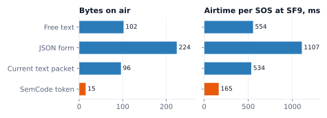
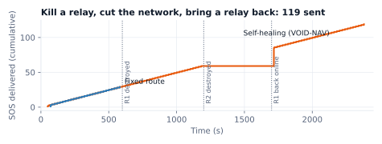
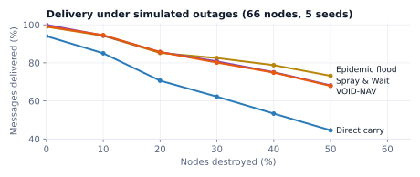
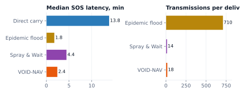
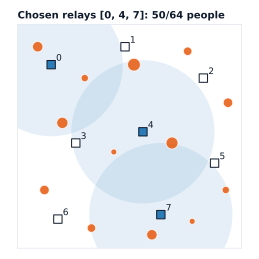
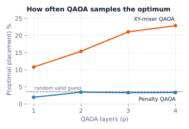

A person is trapped or stranded after a disaster. Towers and power are down. They still have a phone with some battery. A rescue team arrives in the area with a VOID-NAV kit.
| Problem statement asks | VOID-NAV answer | Proof we show |
|---|---|---|
| Communicate without cellular or internet | Phone → local Wi-Fi → LoRa, with no infrastructure anywhere | REAL live hardware |
| Relay across changing connectivity and limited bandwidth | Priority-aware store-and-forward, self-healing relays, 5-byte semantic token | REAL 1 LoRa hop · SIM multi-hop and healing |
| Dependable delivery and status information | Hop and end-to-end acknowledgements and retries; Delivered / Read / Dispatched shown to the survivor | REAL LEDs and phone page update over LoRa |
| Evaluation under simulated outages | 66-node simulator with 0–50% nodes destroyed plus a blackout; relay-kill simulator | SIM charts in sections 6–7 |
| Reliability, latency, resilience analysis | Delivery %, median SOS latency, transmissions per delivery, re-route time | SIM measured numbers |
| Case | Why not | Who handles it |
|---|---|---|
| Phone off, dead, airplane mode, or no phone | Nothing transmits, so no network can hear it | The push button on the beacon node (one-press SOS), search dogs, radar, thermal cameras |
| Unconscious survivor | Cannot send a message | Search instruments. Their findings can be sent over our network. |
| Finding phones that are not connected | Needs a scanner we don't have, and phones randomise their identity | Roadmap: passive Wi-Fi/BLE presence counter, never identifying people |
| Voice and video calls | LoRa carries about 1.8 kbit/s, which is far too slow | Not needed for SOS: the meaning fits in 5 bytes |
| Technology | What it solves | Gap VOID-NAV fills |
|---|---|---|
| Cell Broadcast / SACHET (India, CAP-based; nationwide launch reported May 2026) | Authorities push warnings to every phone in an area | One-way, and needs live towers. Survivors can't reply after towers fall. |
| Satellite SOS on phones (iPhone, some Android) | SOS to a call centre under open sky | Reported as not yet available in India. Needs recent phones and open sky (not rubble or indoors), and routes to a remote centre rather than the local team. |
| Satellite handsets (e.g. BSNL Inmarsat handset ≈ ₹1.34 lakh) | Voice and data for responders | Responders only, too costly for survivors. ≈100 VOID-NAV nodes cost the same as one handset. |
| Meshtastic (hobbyist LoRa mesh) | Off-grid text between people who own devices; used by communities around hurricanes | Everyone needs a device and app set up beforehand. A chat tool with no rescue workflow or dispatch status. |
| Project OWL / ClusterDuck (IBM Call for Code 2018 winner) | LoRa "ducks" plus Wi-Fi portal; ~30 solar nodes in Puerto Rico | Closest to us. Early field tests delivered only about half the messages. Survivors get no "read / dispatched" loop. Cloud-oriented. |
| goTenna and similar mesh radios | Peer messaging between device owners | Each person needs a device |
| LoRa "rescue watches" or wearables | One-button SOS with long range | Must be owned and worn before the disaster, which costs a device per citizen. It could be an input to our network. |
| Radar, thermal, dogs (e.g. NASA JPL FINDER) | Detect living people under rubble | Detection only, so you can't learn needs or headcount. Complements us. |
| Capability | Sat SOS | Meshtastic | ClusterDuck | Rescue watch | VOID-NAV |
|---|---|---|---|---|---|
| Uses the survivor's existing phone, no app | Some phones | ✗ | ✓ | ✗ | ✓ |
| Works with zero internet end to end | ✓ (via satellite) | ✓ | Partly | ✓ | ✓ |
| Survivor sees Read and Dispatched | Partial | ✗ | ✗ | Limited | ✓ |
| Rescue dispatch workflow built in | Remote centre | ✗ | Cloud | ✗ | ✓ local |
| Priority for life-safety traffic | — | ✗ | ✗ | — | ✓ |
| Cost to cover an area | Phone-dependent | Device per person | Nodes | Device per person | Nodes carried by rescuers |
Sources at the end of this document. Availability claims, such as satellite SOS in India and the cell broadcast launch, come from news reports. Re-check them on the day.
With the second ESP32 we get two independent radio nodes. That is enough for a real over-the-air LoRa link in both directions with separate boards across the room. A third radio would be needed for a physical relay, so the relay chain is shown in the simulator using the same rules.
| Board | Set in code | Connections |
|---|---|---|
| ESP32 #1 · Beacon node | #define ROLE ROLE_NODE | Radio: 3V3, GND, SCK→D18, MISO→D19, MOSI→D23, NSS→D5, RST→D4. LED orange→D21, LED green→D22, button D13↔GND. Power: power bank. |
| ESP32 #2 · Gateway | #define ROLE ROLE_GATEWAY | Radio with the same pins: 3V3, GND, D18, D19, D23, NSS→D5, RST→D4. No LEDs or button. USB to the command laptop. |
In two-board mode the firmware raises transmit power to 10 dBm. Keep antennas attached before powering on. Place the boards 3–10 m apart for the demo so the link is visibly over the air.
| Thing | Where it is | Who uses it | What it does |
|---|---|---|---|
| SOS web page | Served by the beacon node over Wi-Fi | Survivor | Send SOS; shows Sending → Delivered → Read → Dispatched; plays an alarm tone and vibrates when the status changes |
| Push button | Beacon node | Survivor without a phone, or a rescuer who found someone | One press sends an SOS ("person at this node, details unknown") |
| Orange LED | Beacon node | Survivors near the node | Fast blink: sending. Slow blink: delivered. Solid: read by rescuer |
| Green LED | Beacon node | Survivors near the node | Solid: rescue dispatched |
| Dashboard | Command laptop. Rescuer phones open the same page through the laptop's hotspot. | Rescue team | Inbox, map/heatmap, Read and Dispatch, broadcast reply |
Build one web app served by the laptop, not two separate apps. Desktop width shows the command view (map, heatmap, inbox, simulators, QAOA). A phone opening the same address gets the field view (inbox and Read/Dispatch buttons only). That gives one codebase and one database.
The SOS page plays a loud tone using the browser's Web Audio API and vibrates using the Vibration API when the status becomes Read or Dispatched. Browsers only allow sound after the person has touched the page, and the SEND tap counts as that touch. Vibration works on Android Chrome but not on iPhone, so iPhones get sound and a full-screen colour change. The node can also beep with a ₹10 buzzer later.
From the dashboard, command can send a short reply to one SOS or to everyone at a node, such as "Team arriving in 10 minutes, stay where you are". It travels as a coded LoRa message and pops up with the alarm tone on every phone connected to that node. That's a small firmware addition and it makes the demo feel alive.
No. Show it as a design answer only. The dashboard is served on the laptop's local Wi-Fi, so an ambulance crew or field hospital nearby opens it on any phone in the viewer role. When any backhaul exists (satellite terminal, surviving fibre, restored cellular), the laptop exports records in CAP format for SACHET or state control rooms and the 108 ambulance service. Label this PROPOSED.
Semantic communication is a 6G research direction: transmit what a message means instead of every character. For an SOS the meaning is a handful of triage facts. We encode them into a 5-byte SemCode token using a codebook both ends share. The receiver expands the token back into a full triage report.

semantic/semcode.py)| Field | Bits | Values |
|---|---|---|
| Category | 4 | Trapped, Medical, Fire, Flood, Collapse, Food/Water, Shelter, Safe, Other |
| Injured · Bleeding | 2 + 2 | No / Yes / Unsure |
| People · Position | 3 + 3 | 1, 2, 3–5, 6–10, 11–20, 20+ · ground, upper floor, basement, roof, outside, vehicle |
| Vulnerable | 4 | child, elderly, pregnant, disabled (bit flags) |
| Needs | 8 | medical, water, food, evacuation, shelter, rescue tools, medicine, light |
| Urgency · Minutes since event | 4 + 10 | 0–15 score · 0–1023 |
Example, real output. The free text "Trapped in basement with my mother and 2 kids, she is bleeding from leg, need water urgently" plus the form taps becomes token 05 4c 88 f8 2a. The dashboard decodes it to: "[CRITICAL 14/15] Trapped: 3–5 people, location basement. Injured person present. Active bleeding. Vulnerable: elderly. Needs: medical, water, rescue tools."
Where the intelligence is: a keyword triage rule on the node reads free text in English, Hindi or Telugu transliteration ("bleeding / khoon / raktham", "trapped / phas gaya", "paani / neellu") and sets the fields and urgency. Taps arrive as codes, so a Telugu tap shows up in English on the dashboard. The survivor's own words can still travel as an optional short text and are never thrown away.
LoRa is just a radio. Self-healing comes from rules in the firmware. Each rule below is implemented in our simulator (sim/selfheal.py) and maps one-to-one to firmware work.



The question: we have N possible relay spots (rooftops, poles, water tanks) and only K relays. Which K spots connect the most survivors? That's a combinatorial optimisation problem, and QAOA (Quantum Approximate Optimization Algorithm) is the leading near-term quantum method for it. It runs on the command laptop with Qiskit, never on the radios.


x_i = 1 → place a relay at site i (one qubit per site)
maximise people covered: H(x) = − Σ C_i x_i + Σ_{i<j} O_ij x_i x_j
C_i = people within range of site i
O_ij = people within range of both i and j (stops double counting)
exactly K relays: enforced by the circuit itself (Dicke start state + XY mixer),
or by a penalty P(Σx_i − K)² in the textbook version
x_i = (1 − Z_i)/2 → Ising Hamiltonian → QAOA circuit
| Measured result (8 sites, K = 3) | Penalty QAOA, p=4 | XY-mixer QAOA, p=3 | Random valid plan |
|---|---|---|---|
| Probability of sampling the optimum | 3.4% | 21.1% | 3.6% |
| Expected coverage (% of optimum) | 67.7% | 92.8% | 80.1% |
| Samples that place exactly K relays | ~80% | 100% | 100% |
| Most frequent answer | 50/64 (optimal) | 50/64 (optimal) | — |
pip install qiskit qiskit-aer qiskit-optimization scipy numpy matplotlib python -c "import qiskit, qiskit_aer; print(qiskit.__version__, qiskit_aer.__version__)"
Tested here with Qiskit 2.5.2, Aer 0.17.2 and Python 3.11. The script builds the circuit gate by gate, so it works on Qiskit 1.x and 2.x.
git clone https://github.com/lakshya0104/void-nav (branch claude/relaxed-bell-alfwpa) cd void-nav/quantum
python qaoa_relays.py --plot # XY-mixer QAOA, 8 sites, K=3, p=3 python qaoa_relays.py --mixer penalty --reps 4 # textbook version, for comparison python qaoa_relays.py --k 2 --reps 2 # smaller and faster
Expected output, about 1–2 minutes on a laptop:
[xy mixer] 8 sites, place K=3 -> 56 valid placements, 8 qubits, p=3 Brute force : sites [0, 4, 7] cover 50/64 people (0.10 ms) QAOA : sites [0, 4, 7] cover 50 people (approx ratio 1.00) Expected coverage: QAOA 92.8% of optimum vs random placement 80.1% P(optimum) : QAOA 21.1% vs random bitstring 0.78% vs random valid placement 3.6% P(valid K) : 100.0% circuit depth 44, 84 two-qubit gates
It saves qaoa_result.json, which the dashboard reads to draw the planned relays, and qaoa_result.png, the map.
Your own map: pass --input venue.json with {"radius_m": 320, "sites": [[x,y],...], "clusters": [[x,y,people],...]}.
Make a free IBM Quantum account, run the same circuit once on a real device with qiskit-ibm-runtime, and screenshot the result as "the same circuit on IBM quantum hardware". Expect noisier results than the simulator, and say so.
| 0:00 | Set-up | Dashboard map shows candidate rooftops (squares) and SOS clusters (heat). |
| 0:10 | Click | "Plan relays (QAOA)". Show the circuit image: 8 qubits, one per rooftop. |
| 0:20 | Result | Planned relays appear with coverage circles: "50 of 64 people covered". |
| 0:30 | Proof | Side panel: QAOA answer = brute-force optimum ✓, P(optimum) 21% vs 3.6% random, 100% valid. |
| 0:40 | Honesty | "No speed-up claimed at 8 sites. It's the formulation that scales as quantum hardware grows, and it's verified today." |
| Tab | What it shows | Data source |
|---|---|---|
| SOS inbox | Cards sorted critical-first, then newest. Decoded SemCode report, the survivor's own words, people, node, hops, RSSI/SNR, time. States Unread → Read (locked) → Dispatched. Alarm and flashing until opened. | REAL from LoRa |
| Map + heatmap | Offline map tiles, beacon node pin, heatmap of SOS density × people, relay health, QAOA planned relays | Node pin CONFIGURED (no GPS) · city heat DEMO DATA toggle |
| Network lab | Self-healing animation (kill or revive relays), semantic compression meter, QAOA planner | SIMULATED · fed by the real latest packet |
| Place | What | Survives |
|---|---|---|
| Beacon node RAM | Last 10 outgoing SOS with their state | Not a reboot. Saving to flash storage is a 30-minute upgrade. |
| Gateway RAM | Last 32 message IDs (for removing duplicates) | Not a reboot |
Laptop SQLite (voidnav.db) | Every SOS, every status change with timestamp and operator, signal stats | Restarts. Permanent until wiped after the operation. |
| Laptop log | Raw copy of every serial line | Audit trail and replay for the simulator |
| Cloud | Nothing. Optional sync to a district control room when backhaul exists. | — |
{"ev":"sos","id":"3F2A-517","prio":0,"people":4,"cat":"TRAPPED","name":"","msg":"leg stuck, need water",
"token":"054c88f82a","rssi":-61,"snr":8.5,"hops":1}
laptop → gateway: READ 3F2A-517 DISPATCH 3F2A-517 REPLY 3F2A-517 Team arriving 10 min
| Part | Status |
|---|---|
| Firmware: portal, LoRa, retries, ACKs, Read/Dispatch → LEDs, button, single- and two-board roles | BUILT compiles for ESP32 core 3.3.12, zero warnings |
| 66-node routing simulator + results | BUILT |
| Self-healing relay simulator, SemCode encoder with airtime maths, QAOA planner | BUILT results in this document |
| Laptop server + dashboard + live network-lab animation | NEXT ~3 hours |
| Firmware additions: SemCode on air, phone alarm tone, REPLY message, flash-saved queue | NEXT ~2 hours |
| Layer | Technology | Why this choice |
|---|---|---|
| Microcontroller | ESP32-WROOM-32, dual-core 240 MHz, Wi-Fi + Bluetooth | About ₹450, makes its own hotspot, drives the radio over SPI |
| Long-range radio | Ai-Thinker RA-02 (Semtech SX1278), LoRa at 433 MHz, up to +18 dBm, sensitivity to about −139 dBm | Kilometre range at milliwatts, no towers, no licence fees at low power |
| Radio settings | SF9, 125 kHz bandwidth, CR 4/5, CRC on, private sync word 0x5A | About 1.8 kbit/s with good sensitivity; ignores other LoRa networks |
| Survivor access | ESP32 soft-AP + DNS captive portal + embedded HTML/JS page | Any phone, no app, no internet |
| Firmware | Arduino C++, ESP32 core 3.x, LoRa library by Sandeep Mistry, WebServer, DNSServer | Standard, well-tested tools |
| Reliability | Unique message IDs, ACK + retry (8 × ~4 s), duplicate removal, monotonic status, priority queue | The problem statement's "dependable delivery and status" |
| Semantic layer | SemCode 40-bit codebook + multilingual keyword triage | 70% less airtime, deterministic, never makes up details |
| Command backend | Python 3, pyserial, FastAPI + WebSocket, SQLite | Runs offline on any laptop |
| Dashboard | HTML/JS, Leaflet with pre-cached offline tiles, Web Audio alarm | Opens on the laptop and on rescuer phones over local Wi-Fi |
| Quantum | Qiskit 2.x, Qiskit Aer, SciPy COBYLA; XY-mixer QAOA | Relay planning, verified against brute force |
| Simulation | Pure-Python delay-tolerant network simulator (66 nodes) + self-healing relay simulator | Evaluation under outages, as the problem statement asks |
| Security (roadmap) | AES-128/256 per deployment + truncated authentication tag (HMAC), keys loaded by the agency | Stops fake SOS and eavesdropping. AES-256 stays strong even against quantum attacks. |
Roles: Presenter (you) narrates and hands the judge a phone. Jyothir is the rescue commander at the laptop. The beacon node sits at the far end of the table or across the room. The gateway is plugged into the laptop. The webcam points at the beacon node's LEDs and shows them on the big screen.
| 0:00 | Hook | "Earthquake. Towers down. You're on the second floor and your phone says No service." Turn off the laptop's Wi-Fi in front of them: "No internet in this demo either." |
| 0:20 | Survivor | Hand the judge a phone already joined to VOID-NAV SOS, with a QR code as backup. The SOS page is open. |
| 0:40 | Send | Judge taps Trapped, sets people to 3, types "leg stuck, need water", presses SEND. The phone shows Sending (try 1) and the orange LED blinks fast on the webcam. |
| 1:00 | Lands | Alarm sounds on the dashboard. A red card appears: decoded report, the judge's own words, RSSI −58 dBm ("that's a real radio signal"). The phone shows Delivered and the LED slows its blink. |
| 1:20 | Read | Jyothir opens the card → READ. Orange LED turns solid and the judge's phone beeps with "Read by rescuer". "You now know a human saw it." |
| 1:40 | Dispatch | Jyothir clicks Dispatch → Team 2 and sends "Team arriving in 10 min". Green LED, the phone alarm and the message pop up. |
| 2:00 | No phone | Press the beacon node's push button. An instant critical SOS appears. "For someone with no phone, or a rescuer who just found someone." |
| 2:15 | Failure | Unplug the gateway's USB. The judge sends again and the phone stays at Sending, retrying. Plug it back in: Delivered. "Status is real, not cosmetic." |
| 2:40 | Bandwidth | Network lab: the judge's message as text is 102 bytes / 554 ms; as a SemCode token it's 15 bytes / 165 ms. "70% less airtime, 3.4× more SOS per channel." |
| 3:00 | Healing | Simulator: the judge's SOS hops S→R1→R3→R5→R8→G. Kill R1, and it re-routes in about a second. Cut off S: messages wait. Revive: the backlog flushes. "119 of 119." |
| 3:25 | Quantum | Click Plan relays (QAOA). Planned relays appear with "QAOA = brute-force optimum ✓, 6× better than chance". |
| 3:45 | Close | "An instant private network rescuers carry in. Any phone becomes a beacon, and it gets an answer back. Built on ₹1,200 nodes." Point to the honesty panel: real vs simulated. |
192.168.4.1.| Portal doesn't pop up | Open 192.168.4.1 or scan the QR. Turn off mobile data. |
| LoRa link dead | Check antennas and 3V3. Press EN on both boards. Move the boards closer. |
| Phone page slow | A crowded 2.4 GHz hall. Keep the phone within 2 m of the node. |
| Laptop dashboard crash | Restart the server; messages are safe in SQLite. The node keeps retrying meanwhile. |
| QAOA too slow | Show the cached result. Run --k 2 --reps 2 live. |
| Everything fails | Backup video + simulators + this document's numbers. |
| Part | Presenter | Jyothir |
|---|---|---|
| Hook, problem, scope | Speaks | Shows the architecture slide |
| Live loop | Guides the judge on the phone | Commander: Read, Dispatch, Reply |
| Semantic and healing | Explains the numbers | Drives the network lab |
| Quantum | Explains the problem and limits | Clicks Plan, shows the proof panel |
| Q&A | Product, impact, business | Hardware, firmware, quantum maths |
| Question | Answer |
|---|---|
| What if the survivor has no phone? | The push button on the beacon node sends a one-press SOS. A rescue watch or wearable could be another input to the same network later. People with no device at all are found by search dogs, radar and thermal cameras, and those findings travel over our network. |
| What if the phone battery is dead? | Then nothing transmits, and no system can hear it. That's physics. We minimise drain: the page is tiny, there's no app, and status updates arrive without the person re-sending. Awareness drills say "keep Wi-Fi on, save battery". |
| What if the node's battery dies? | Messages already delivered are safe on the laptop. The node's queue is lost today; saving it to flash is planned. Estimated 2–3 days on 10,000 mAh with the hotspot on. Solar plus a charge board is the roadmap. Relays without Wi-Fi sleep and last much longer. |
| How does a survivor know to join the Wi-Fi? | Pre-disaster awareness ("turn Wi-Fi on, join VOID-NAV SOS"), one line in the official alert SMS, rescuers shouting on site, and an open network at the top of the Wi-Fi list. |
| Can you auto-connect to phones? | No, and we shouldn't. Phones never join networks by themselves, which is a security feature. We invite rather than intrude. |
| How far does it reach? | Phone to node: tens of metres (Wi-Fi), so nodes are carried in or pre-placed. Node to node: typically 1–5 km in cities, more with height. Each relay extends that. |
| Where is the relay? You have two radios. | A relay needs a third radio. Our two boards prove the real over-the-air link in both directions. The multi-hop rules run in a simulator using the same message rules, labelled as simulated. |
| How do you know the message was delivered? | The gateway acknowledges every SOS, and the node retries until it gets that acknowledgement. Read and Dispatch are acknowledged back. After 8 failed tries the phone says "Not delivered". Unplug the gateway and watch. |
| Where is the AI? | The semantic encoder and keyword triage, which run deterministically. We deliberately keep neural models off the critical path because they can make up details. An offline language model on the laptop could summarise long notes in future. |
| Why quantum? Brute force is faster. | At 8 sites, yes, and we say so. QAOA is the method that maps to quantum hardware as maps grow (100 sites with K = 10 is 1.7 × 1013 plans). Our XY-mixer version is verified against the exact answer and beats naive QAOA. |
| How do you know the survivor's location? | Today it's the beacon node's configured position, because a browser won't give GPS location to a plain local web page. Next: a GPS module on every node, plus a "floor / room" answer in the form. |
| Is it secure? Can someone spoof an SOS? | The prototype is not encrypted yet. Roadmap: per-deployment AES key plus an authentication tag on every packet, so only authorised nodes can relay. We collect no phone numbers, and a name is optional. |
| Privacy? | No identities collected. Local IPs are temporary and identify no one. Data stays on the command laptop and is wiped after the operation. |
| Is 433 MHz legal in India? | The demo runs at low power. India's licence-free 433 MHz allowance is very restrictive, so production moves to 865–867 MHz modules with duty-cycle limits under WPC rules (the Indian radio regulator). The firmware change is one line. |
| How many users at once? | The channel carries about 4,000 SemCode SOS per hour vs about 1,200 text messages (peak ALOHA use). Phones share one node's Wi-Fi, about 10 at once on an ESP32 by default. Multiple nodes and channels scale it further. |
| Why not Meshtastic or a rescue watch? | Both need a device per person, set up beforehand. We use the phone already in every pocket, plus a rescue workflow with Read/Dispatch status. Watches can join our network as inputs. |
| What if the command laptop dies? | Saved data is in SQLite. Nodes keep retrying, and any second gateway or laptop can take over. Multiple gateways is on the roadmap. |
| What if a relay is destroyed? | Neighbours notice 3 missed beacons and route around it, about 1 s in our simulation once detected. If there's no route, messages are stored, not dropped. |
| Flooding, water, metal? | Water and metal block radio. Nodes go on rooftops or boats in waterproof boxes, and moving boats work as message carriers. |
| Cost? | About ₹1,200 per node excluding battery. One ₹1.34 lakh satellite handset costs about the same as 100 nodes. |
We can't see every team's build, so this reads the field from what you observed and from what usually happens at hackathons this size. Judges remember a story they lived, one clear number, and honesty under pressure.
| Track | What usually appears | How we read against it |
|---|---|---|
| Next Gen Communication (ours) | LoRa mesh text, slides about 6G, a watch idea; few working two-way demos | Working two-way loop with real RSSI, plus 3 measured pillars. The watch team needs hardware they may not have. |
| Open Innovation | Drones, robots, flashy builds | We don't compete on spectacle. We compete on "the judge used it and it worked". |
| Embedded / Circuit Design | Strong hardware with weaker system story | We have hardware plus system, network and dashboard |
| Generative AI | Chatbots and assistants | Our semantic layer is deterministic and measured, which reads as more mature |
| Defence / Security | Surveillance, encryption, drones | "Instant private network" also has a defence variant; mention it in one line |
| Health, Green, Sustainable, Smart Automation | Monitoring and IoT dashboards | Our impact story (lives, minutes, cost) is direct |
| Blockchain, E-commerce, Game Dev | Software-only | Live hardware is rarer and more memorable |
| Stream | Customer | Model |
|---|---|---|
| Rescue kits (beacon nodes + relays + gateway) | NDRF, SDRF, fire services, district disaster authorities | One-time hardware sale through government procurement |
| Command software licence | State disaster authorities | Annual licence: dashboard, planner, updates, training |
| Pre-placed SOS points | Cyclone shelters, schools, hospitals, panchayats, railways | Government and CSR-funded installations with maintenance contracts |
| Event mode | Kumbh, stadiums, pilgrimages (lost person and medical help when networks jam) | Rental per event |
| Defence variant | Army and paramilitary units with no infrastructure | Through iDEX and defence innovation programmes |
Prices to be validated with real component quotes and pilot feedback. We don't quote numbers we haven't measured.
| When | What |
|---|---|
| Hackathon | Two-board live loop; semantic, self-healing and QAOA proofs; dashboard |
| +1 month | Third radio for a physical relay; GPS module; SemCode on air; encryption and authentication; flash-saved queue; buzzer |
| +3 months | 865 MHz modules; waterproof enclosures; solar relays; range and reliability field test on campus |
| +6 months | Pilot drill with a district disaster authority or SDRF; multi-gateway database sync; CAP export |
| +12 months | Drone or tethered-aerostat relays for large areas; satellite backhaul at command; QAOA on IBM quantum hardware for city-scale plans; passive phone presence counter (privacy-preserving) |
| Shown in demo | Status |
|---|---|
| Phone → Wi-Fi SOS page, no app, no internet | REAL |
| LoRa transmission between two independent boards, RSSI/SNR | REAL |
| Retries, delivery ACK, Read/Dispatch back to LEDs and phone, alarm tone | REAL |
| Push-button SOS | REAL |
| SemCode encoding and airtime numbers | REAL code and formula · on-air once added to firmware |
| Multi-hop relays, self-healing, 66-node outage evaluation | SIMULATED |
| QAOA relay plan | REAL quantum circuit on a simulator · demo map |
| City heatmap, other SOS pins, node GPS position | MOCK / CONFIGURED |
| Encryption, hospital links, phone scanning | ROADMAP |
qaoa_result.json.claude/relaxed-bell-alfwpa)| Path | What |
|---|---|
firmware/voidnav_esp32/ | ESP32 firmware (single-board, node and gateway roles) |
docs/wiring.html | Beginner wiring guide |
quantum/qaoa_relays.py | QAOA relay planner (penalty and XY mixer) with brute-force check |
semantic/semcode.py | SemCode encoder/decoder, keyword triage, LoRa airtime maths |
sim/voidnav.py · sim/selfheal.py | Outage evaluation and self-healing relay simulators |
deck/ · report/ | Presentation deck and this playbook |